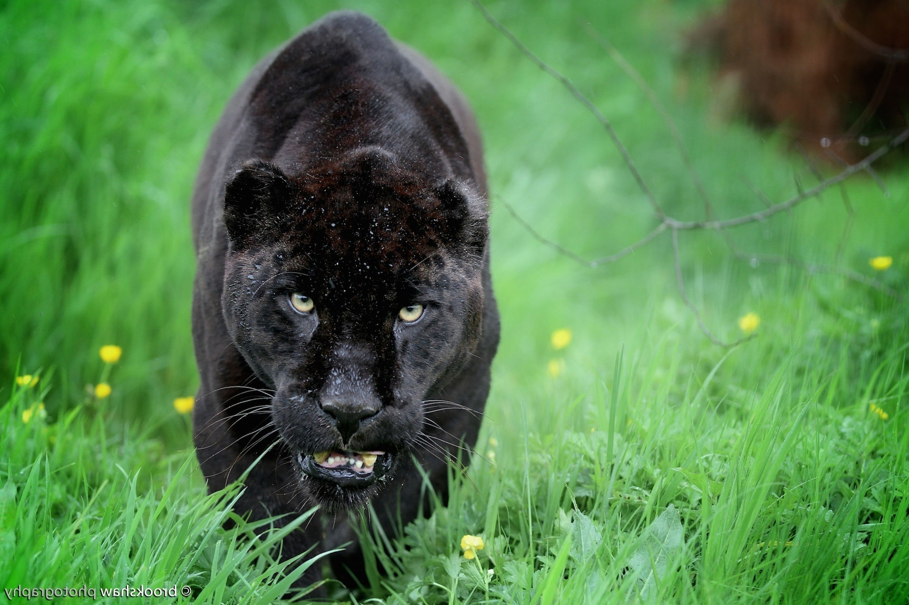

Описание пантер
Пантера – относится к роду крупных хищных животных из семейства кошачьих. Данный род представлен четырьмя ныне живущими всеми известными хищниками: тигром, леопардом, львом и ягуаром. Пантера является никем иным, как представителем леопардовых (читайте нашу статью: самые большие кошки в мире). Хотя до сих пор не утихают споры относительно того, к кому именно относится пантера, к ягуарам или леопардам. Выделяют пантер из-за их окраски, ведь многие из них имеют ровный окрас, чаще всего черного цвета.
Интересный факт: за величественный вид пантера использовалась на эмблеме английских королей. Ныне она присутствует на гербе африканской страны Габон.
Внешний вид пантер
Эти дикие животные имеют мускулистое тело, которое в длину достигает 95 -180 см, хвост – 70-115 см. Масса пантер обычно колеблется в пределах 40-55 кг, но некоторые особи могут достигать 100 кг. На хвост приходится до половины длины тела, иногда и больше, благодаря такому помощнику они отлично держат равновесие и комфортно себя чувствуют даже на большой высоте. Пантеры очень грациозные животные, но за внешней красотой и изяществом скрывается настоящий безжалостный хищник, способный легко напасть на человека.
Ареал, места обитания пантер
Ареал рода включает тропические страны: Африку, Азию кроме северной ее части, Центральную и Южную Америку и самую южную часть Северной Америки, а также крайний юго-восток Европы. Много пантер обитает на острове Ява.
Что едят пантеры
Пантера – это плотоядный хищник, поэтому в его рационе могут попадаться любые животные. Предпочтение дикая кошка отдает парнокопытным, при этом размеры жертвы не имеют значения: среди них встречаются зебры, антилопы, буйволы, косули и т.п. Она может также нападать и на домашний скот, жертвами могут стать коровы, овцы, козы.
Несмотря на то, что пантера охотится преимущественно на земле, во время отдыха на дереве ее может заинтересовать и обезьяна в качестве потенциальной жертвы. Этот хищник может обойтись без еды 5-6 суток, но в таком случае чувство голода насколько овладевает кошкой, что она начинает представлять большую опасность для человека, на которого без раздумий готова напасть.
Свою жертву эти хищники обычно высматривают и подкарауливают, выжидая удобного момента. Когда дичь подойдет ближе, пантера в несколько прыжков может настичь ее, и, если нужно, может броситься догонять, развивая при этом скорость до 60 км/ч. От этого хищника тяжело убежать или вырваться из его цепких лап